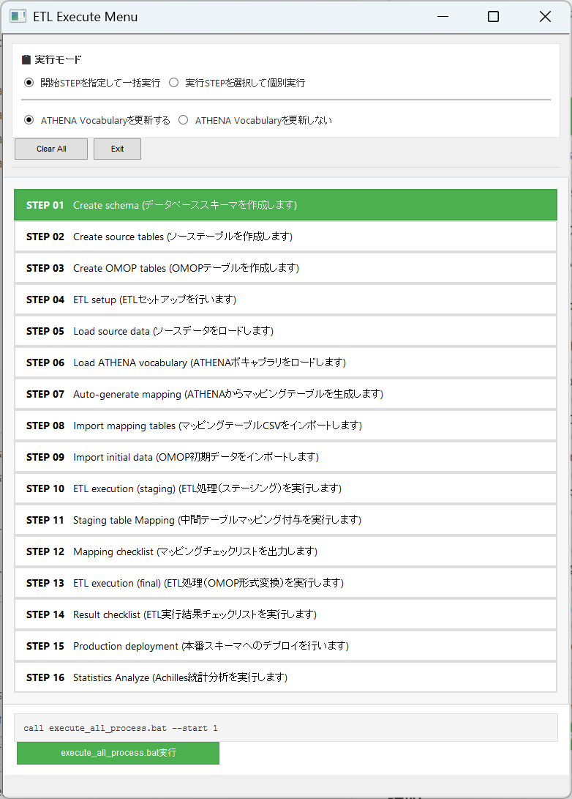
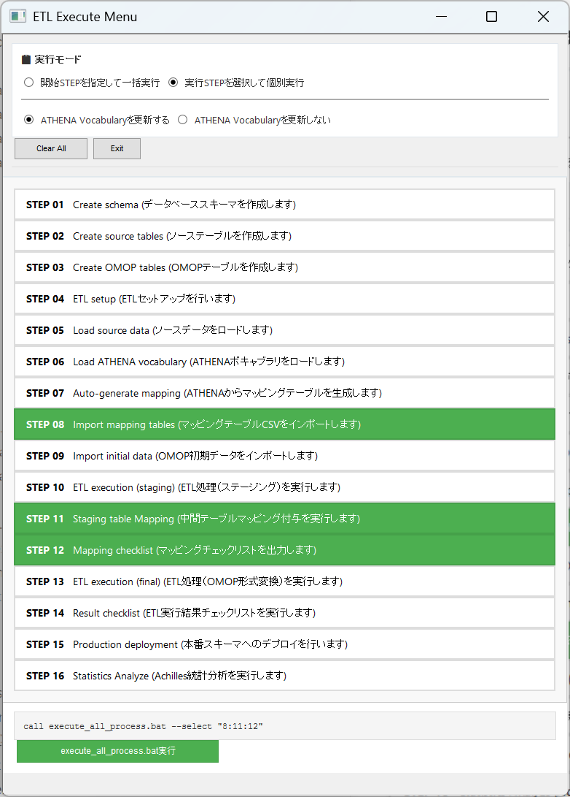

作成日： 2026年2月8日（更新）
対象ファイル： execute_all_process.bat
説明： OMOP ETL処理の実行アプリケーション。一括実行、選択実行の２つのモードに対応。CUI操作に加えてBATの実行モードをGUIから指定できる機能を備える。
execute_all_process.bat は、以下OMOP変換プロセスを実行するためのCUIアプリケーションです：
[データベース環境構築]
[ソースデータセットアップ]
[OMOP関連データセットアップ]
[OMOPデータ変換処理の実行]
[OMOPデータの本番環境反映]
このアプリケーションを実行するためには、以下の準備が完了していることが前提条件です。
⚠️ 重要な前提事項
0000_setting\_env.bat にデータベース名、接続ユーザ名、スキーマ名が設定されていること（参照：READMEの環境構築手順）3000_load_source\dat\*.csvに配置済であること4000_load_vocab\athena\*.csvに配置済であることファイル： execute_menu.hta
説明： execute_all_process.batの実行パラメータをGUI操作で設定することができます。
execute_all_process.hta をダブルクリック⚠️ 注意事項
- 拡張子htaファイルはOSの環境によっては開くアプリケーションが関連付けられておらず、アプリケーションの選択を求められる場合があります。その場合は以下のいずれかの方法で起動することができます。
execute_all_process.htaではなくexecute_all_processGUI.BATを実行する- 「アプリを選択して開く」画面最下部の「PCでアプリを選択する」->
C:\Windows\SysWOW64\mshta.exeを選択する
実行モード選択
オプション設定
実行
execute_all_process.batが起動して処理開始
説明：
call execute_all_process.bat --start 1execute_all_process.batが実行される
説明：
call execute_all_process.bat --select "8:11"execute_all_process.batが実行されるexecute_all_process.bat は3つの実行モードをサポートします：
execute_all_process.bat
説明：
対応シーン： 初回実行、またはソースデータやATHENA Vocabulary、マッピングテーブルの更新に伴い途中STEPから再実行する場合
対応シーン例：
execute_all_process.bat --start <step_number> [--skipathena] [--silent]
パラメータ：
<step_number> : 開始STEP番号（1～16）--skipathena : ATHENA Vocabularyの更新をスキップ(処理時間の大幅短縮)--silent : 実行確認入力（Y/N）と完了後のPAUSEをスキップ。タスクスケジューラモードや他BATからの呼び出しに指定する説明：
対応シーン：
実行例：
execute_all_process.bat --start 7 --skipathena
--> STEP7(マッピングテーブルインポート)から再実行。ATHENA Vocabularyは更新がないので処理しない。
execute_all_process.bat --start 1 --silent
--> STEP1から全ステップを指定・Y入力不要・PAUSEなしで完了。タスクスケジューラに登録する場合などに利用。
💡 タスクスケジューラへの登録方法
タスクスケジューラの「操作」設定では以下のように指定してください：
項目 設定値 プログラム/スクリプト cmd引数の追加 /c "C:\...\execute_all_process.bat" --start 1 --silent開始（オプション） 空欄でも可（BATが自動で自フォルダに移動）
execute_all_process.bat --select "<step1>:<step2>:<step3>..." [--skipathena] [--silent]
パラメータ：
<step1>:<step2>:<step3>... : 実行するSTEP番号をコロン（:）で区切って指定--skipathena : ATHENA Vocabularyの更新をスキップ(処理時間の大幅短縮)--silent : 実行確認入力（Y/N）と完了後のPAUSEをスキップ。タスクスケジューラモードや他BATからの呼び出しに指定する説明：
対応シーン：
実行例：
execute_all_process.bat --select "8:11:12"
--> STEP8(マッピングテーブルインポート), STEP11(中間テーブルマッピング付与), STEP12(マッピングチェックリスト出力)を実行
execute_all_process.bat --select "16"
--> STEP16(Achilles統計データ生成)だけを実行
execute_all_process.bat --select "8:11:12" --silent
--> STEP8(マッピングテーブル更新),11(中間テーブルマッピング付与),12(マッピングチェックリスト)をY入力不要・PAUSEなしで実行。マッピング洗練サイクルでよく使用。
通常の運用で想定される以下のシーンを想定し、具体的な実行例を説明します。
- ユースケース1：初めて実行する場合
- ユースケース2：コンセプトマッピングCSVを更新してデータ変換を再実行する場合
- ユースケース3：コンセプトマッピングテーブルを更新して、データ変換前にマッピングチェックリストを確認する場合
- ユースケース4：変換元のソースデータを更新する場合
- ユースケース5：ATHENAボキャブラリを更新する場合
シーン： OMOP CDM ETLの環境構築を始めて実施。スキーマ作成から統計分析まで、すべてのSTEPを一括実行する。
【実行方法】
PS> execute_all_process.bat
説明： 引数なしで実行すると、ユーザーに開始STEP番号の入力を要求します。
【出力】
====================================================================
OMOP ETL All Steps Execution
====================================================================
The following steps will be executed in order:
1. Create schema
2. Create source tables
3. Create OMOP tables
4. ETL setup
5. Load source data
6. Load ATHENA vocabulary
7. Auto-generate mapping tables
8. Import mapping tables
9. Import initial data
10. ETL execution (staging)
11. Stagint table mapping
12. Mapping checklist
13. ETL execution (final)
14. Result checklist
15. Production deployment
16. Statistics Analyze
====================================================================
Pre-execution checklist:
- _env.bat is properly configured
- PostgreSQL is running
- Required CSV files are placed
* 3000_load_source/dat/: source data CSV
* 3000_load_source/mst/: master CSV
* 4000_load_vocab/athena/: ATHENA vocabulary CSV
====================================================================
====================================================================
Which step do you want to start from?
====================================================================
Enter the starting step number (1-16, or X to cancel):
ユーザー入力： 1 を入力してEnter
【実行結果】
Starting from step 1
====================================================================
Do you want to proceed? (Y/N):
====================================================================
ユーザー入力： Y を入力してEnter
====================================================================
Starting batch execution
====================================================================
[2026-02-08 09:00:15] Batch execution started
====================================================================
[1/16] Create schema
====================================================================
[STEP1] Started
... (create_schema.bat実行) ...
[STEP1] Completed
====================================================================
[2/16] Create source tables
====================================================================
[STEP2] Started
... (create_table.bat実行) ...
[STEP2] Completed
====================================================================
[3/16] Create OMOP tables
====================================================================
[STEP3] Started
... (create_table.bat実行) ...
[STEP3] Completed
... (STEP 4～15が順序通り実行) ...
====================================================================
Batch execution completed successfully!
====================================================================
[2026-02-08 14:30:45] Batch execution completed
Next steps:
- Please check the log file
- Check the result checklist if needed
====================================================================
Log file recording completed
====================================================================
✅ Batch execution completed successfully.
シーン： マッピングテーブルのCSVファイルを更新した後、その変更を反映してデータ変換を再実行する。STEP8（マッピングテーブルインポート）から最後まで処理を実行する。ATHENA Vocabularyは更新がない。
【実行方法】
execute_all_process.bat --start 8 --skipathena
説明： STEP 8から実行開始（--start 8）し、ATHENA Vocabulary関連処理をスキップ（--skipathena）します。
【出力】
Starting from step 8
====================================================================
Do you want to proceed? (Y/N):
====================================================================
ユーザー入力： Y を入力してEnter
【実行結果】
====================================================================
Starting batch execution
====================================================================
[2026-02-08 09:00:15] Batch execution started
[STEP1] Skipped ← STEP 1～7は既に実行済みなのでスキップ
[STEP2] Skipped
[STEP3] Skipped
[STEP4] Skipped
[STEP5] Skipped
[STEP6] Skipped [--skipathena flag is set]
[STEP7] Skipped
====================================================================
[8/16] Import mapping tables
====================================================================
[STEP8] Started
... (03_import_stcm.BAT実行) ...
[STEP8] Completed
====================================================================
[9/16] Import initial data
====================================================================
[STEP9] Started
... (04_import_initdata.BAT実行) ...
[STEP9] Completed
====================================================================
[10/16] ETL execution [staging]
====================================================================
[STEP10] Started
... (01_etl_execution_to_stem.bat実行) ...
[STEP10] Completed
====================================================================
[11/16] Staging table Mapping
====================================================================
[STEP11] Started
... (02_etl_execution_stem_mapped.bat実行) ...
[STEP11] Completed
====================================================================
[12/16] Mapping checklist
====================================================================
[STEP12] Started
... (03_mapping_checklist.bat実行) ...
[STEP12] Completed
====================================================================
[13/16] ETL execution [final]
====================================================================
[STEP13] Started
... (04_etl_execution_to_final.bat実行) ...
[STEP13] Completed
====================================================================
[14/16] Result checklist
====================================================================
[STEP14] Started
... (05_result_checklist.bat実行) ...
[STEP14] Completed
====================================================================
[15/16] Production deployment
====================================================================
[STEP15] Started
... (06_production_deployment.bat --data実行) ...
[STEP15] Completed
====================================================================
[16/16] Statistics Analyze
====================================================================
[STEP16] Started
... (01_achilles_concept_hierarchy.bat実行) ...
... (02_achilles_statistics.bat実行) ...
... (03_achilles_concept_count.bat実行) ...
[STEP16] Completed
====================================================================
Batch execution completed successfully!
====================================================================
[2026-02-08 11:30:45] Batch execution completed
✅ Batch execution completed successfully.
シーン： コンセプトマッピングCSVを更新した後、マッピングテーブルの読み込みと確認チェックリストだけを実行して、データが正しく反映されているか検証する
【実行方法】
PS> execute_all_process.bat --select "8:11:12"
説明： STEP 8（Import mapping tables）、STEP 11（Staging table Mapping）、STEP 12（Mapping checklist）のみを実行します。STCM 更新後は Staging table Mapping を再構築してからマッピングチェックリストを出力する必要があります。
【出力】
Steps to execute:
8. Import mapping tables
11. Staging table Mapping
12. Mapping checklist
====================================================================
Do you want to proceed? (Y/N):
====================================================================
ユーザー入力： Y を入力してEnter
【実行結果】
====================================================================
Starting batch execution
====================================================================
[2026-02-08 09:00:15] Batch execution started
[STEP1] Skipped ← STEP 1～7はスキップ
[STEP2] Skipped
[STEP3] Skipped
[STEP4] Skipped
[STEP5] Skipped
[STEP6] Skipped
[STEP7] Skipped
====================================================================
[8/16] Import mapping tables
====================================================================
[STEP8] Started
... (03_import_stcm.BAT実行) ...
[STEP8] Completed
[STEP9] Skipped ← STEP 9, 10はスキップ
[STEP10] Skipped
====================================================================
[11/16] Staging table Mapping
====================================================================
[STEP11] Started
... (02_etl_execution_stem_mapped.bat実行) ...
[STEP11] Completed
====================================================================
[12/16] Mapping checklist
====================================================================
[STEP12] Started
... (03_mapping_checklist.bat実行) ...
[STEP12] Completed
[STEP13] Skipped ← STEP 13～16はスキップ
[STEP14] Skipped
[STEP15] Skipped
[STEP16] Skipped
====================================================================
Batch execution completed successfully!
====================================================================
[2026-02-08 09:30:45] Batch execution completed
✅ Batch execution completed successfully.
シーン： ソースシステムから抽出したCSVファイルを更新したので、ソースデータインポートから最後まで処理を再実行する。ATHENA Vocabularyは更新がない。
【実行方法】
PS> execute_all_process.bat --start 5 --skipathena
説明： STEP5（ソースデータのインポート）から実行する。ATHENA Vocabulary関連処理は行わない。
【出力】
Starting from step 5
====================================================================
Do you want to proceed? (Y/N):
====================================================================
ユーザー入力： Y を入力してEnter
【実行結果】
====================================================================
Starting batch execution
====================================================================
[2026-02-08 09:00:15] Batch execution started
[STEP1] Skipped ← STEP 1～4は既に実行済みなのでスキップ
[STEP2] Skipped
[STEP3] Skipped
[STEP4] Skipped
====================================================================
[5/16] Load source data
====================================================================
[STEP5] Started
... (01_import_source.BAT実行) ...
... (02_import_master.BAT実行) ...
[STEP5] Completed
====================================================================
[6/16] Load ATHENA vocabulary [SKIPPED]
====================================================================
[STEP6] Skipped [--skipathena flag is set]
====================================================================
[7/16] Auto-generate mapping tables
====================================================================
[STEP7] Started
... (02_generate_automapping.BAT実行) ...
[STEP7] Completed
====================================================================
[8/16] Import mapping tables
====================================================================
[STEP8] Started
... (03_import_stcm.BAT実行) ...
[STEP8] Completed
... (STEP 9～15が順序通り実行) ...
====================================================================
Batch execution completed successfully!
====================================================================
[2026-02-08 12:00:45] Batch execution completed
✅ Batch execution completed successfully.
シーン： ATHENA Vocabularyファイルを更新してOMOPデータを再生成する。
【実行方法】
PS> execute_all_process.bat --start 6
説明： STEP6（ATHENAボキャブラリのロード）から実行する。
【出力】
Starting from step 6
====================================================================
Do you want to proceed? (Y/N):
====================================================================
ユーザー入力： Y を入力してEnter
【実行結果】
====================================================================
Starting batch execution
====================================================================
[2026-02-08 09:00:15] Batch execution started
[STEP1] Skipped ← STEP 1～5は既に実行済みなのでスキップ
[STEP2] Skipped
[STEP3] Skipped
[STEP4] Skipped
[STEP5] Skipped
====================================================================
[6/16] Load ATHENA vocabulary
====================================================================
[STEP6] Started
... (01_import_athena.BAT実行) ...
[STEP6] Completed
====================================================================
[7/16] Auto-generate mapping tables
====================================================================
[STEP7] Started
... (02_generate_automapping.BAT実行) ...
[STEP7] Completed
====================================================================
[8/16] Import mapping tables
====================================================================
[STEP8] Started
... (03_import_stcm.BAT実行) ...
[STEP8] Completed
... (STEP 9～15が順序通り実行) ...
====================================================================
Batch execution completed successfully!
====================================================================
[2026-02-08 11:45:45] Batch execution completed
✅ Batch execution completed successfully.
更新履歴：